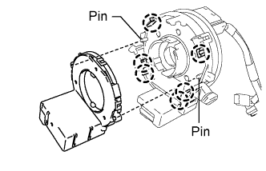
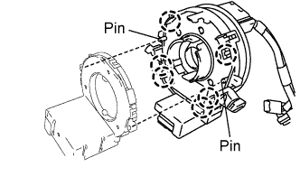
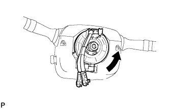
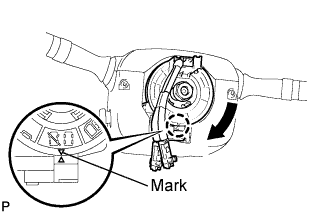

STEERING ANGLE SENSOR > INSTALLATION |
| 1. INSTALL STEERING ANGLE SENSOR |
 |
Align the installation holes on the steering sensor with the pins on the spiral cable.
Attach the 6 claws and install the steering sensor to the spiral cable.
| 2. INSTALL SPIRAL CABLE SUB-ASSEMBLY |
 |
Align the pins on the spiral cable with the installation holes on the steering sensor.
Attach the 6 claws and install the spiral cable to the steering sensor.
Check that the front wheels are facing straight ahead.
Set the turn signal switch to the neutral position.
 |
Attach the 3 claws to install the spiral cable with steering sensor.
Connect the connectors to the spiral cable with steering sensor.
| 3. INSTALL UPPER STEERING COLUMN COVER |
 |
Attach the claw to install the upper steering column cover.
Attach the 4 clips to install the upper steering column cover onto the instrument cluster finish panel.
| 4. INSTALL LOWER STEERING COLUMN COVER |
 |
Attach the 2 claws to install the lower steering column cover.
Install the 3 screws.
| 5. ADJUST SPIRAL CABLE |
Check that the engine switch is off.
Check that the cable is disconnected from the battery negative (-) terminal.
 |
Rotate the spiral cable with steering sensor counterclockwise slowly by hand until it feels firm.
 |
Rotate the spiral cable with steering sensor clockwise approximately 2.5 turns to align the marks.
| 6. INSTALL STEERING WHEEL ASSEMBLY |
 |
Align the matchmarks on the steering wheel assembly and steering main shaft assembly.
Install the steering wheel assembly set nut.
| 7. INSTALL STEERING PAD |
With the steering pad installed on the vehicle, perform a visual check. If there are any defects as mentioned below, replace the steering pad with a new one:
Cuts, minute cracks or marked discoloration on the steering pad top surface or in the grooved portion.
Make sure that the horn sounds.
| 8. INSTALL LOWER NO. 2 STEERING WHEEL COVER |
 |
Attach the 2 claws to install the cover.
| 9. INSTALL LOWER NO. 3 STEERING WHEEL COVER |
 |
Attach the 2 claws to install the cover.
| 10. CONNECT CABLE TO NEGATIVE BATTERY TERMINAL |
| 11. CHECK SRS WARNING LIGHT |
Check the SRS warning light (Click here).